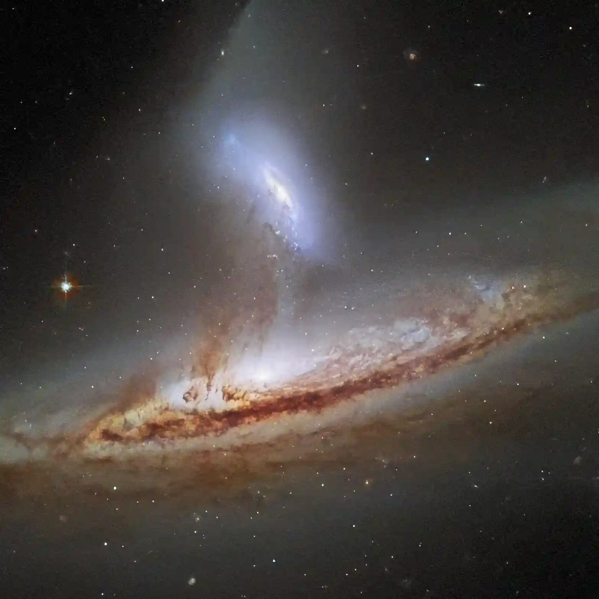

Source: NASA.
Feedback received!
Thank you for your response!
Thank you for your response! We will aim to get back to you soon. To get back to an info page, use the navbar at the top of the page.

Thank you for your response! We will aim to get back to you soon. To get back to an info page, use the navbar at the top of the page.